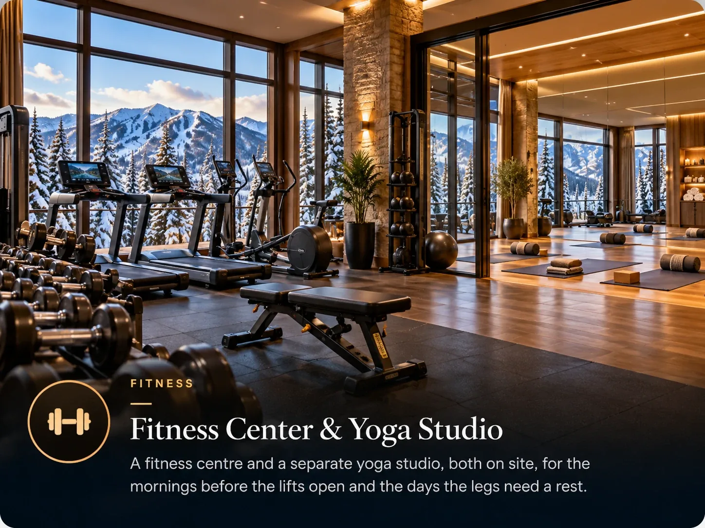

Park City sits around 7,000 feet at the base, and the skiing goes well above 9,000. If you flew in from near sea level that morning, your body has opinions about it.

Altitude is the most common reason a first ski day goes badly, and it gets blamed on jet lag, fitness or the previous night more often than on the actual cause.
What it feels like
Mild and extremely common: shortness of breath on easy effort, a headache, poor sleep on the first night, waking up thirsty, and tiring faster than you expect.
Most people adjust substantially within two or three days. Children often handle it better than adults, and fitness is a poorer predictor than people assume.
What actually helps
- Drink considerably more water than usual. Mountain air is dry, you lose fluid breathing, and dehydration produces most of what people blame on altitude. Start on the plane.
- Go easy on alcohol the first night. It hits harder at altitude and it worsens the sleep you were not going to get anyway.
- Make day one shorter. Half a day of skiing on arrival day beats a full one that ruins day two.
- Eat properly. Appetite often drops at altitude, which leaves people underfuelled on a day of hard exercise.
- Expect a bad first night. Broken sleep at altitude is normal and it resolves.
Land, do the grocery shop, collect lift passes, sit in the hot tub, eat early, sleep. Ski properly from day two. The week goes better for it, and you lose almost nothing.
When it is more than adjustment
Severe or worsening headache, repeated vomiting, confusion, or breathlessness at rest are not normal adjustment. Those warrant descending and getting medical advice rather than waiting it out. This is uncommon at Park City elevations but it is not unheard of.
Anyone in the group with a heart or lung condition, or who is pregnant, should take advice before a trip at this elevation rather than after arriving.
The sun
At altitude, on snow, the sun is far stronger than the temperature suggests. Sunburn on day one is extremely common and entirely preventable. Sunscreen and proper goggles belong on the packing list, not on the shopping list for day two.
Common questions
How high is Park City?
The base areas sit around 6,800 to 7,000 feet, and the lifts take you well above 9,000 feet. Most visitors arrive from much lower elevations.
Will I get altitude sickness in Park City?
Mild effects are common: breathlessness on easy effort, a headache, poor first-night sleep and tiring quickly. Most people adjust within two or three days. Severe symptoms are uncommon and need medical advice rather than waiting.
How do I adjust to altitude faster?
Drink much more water than usual starting on the flight, go easy on alcohol the first night, make the first day shorter, and eat properly even if your appetite drops.
The villa this guide comes from
We own a Premier Two-Bedroom Villa inside Westgate Park City Resort, in Canyons Village. It is 1,100 square feet, two king bedrooms and two queen sleeper sofas, so it sleeps eight in one unit. Full kitchen with a centre island, two bathrooms, in-unit laundry, and a short walk to the Red Pine Gondola.
It is available for Presidents' Week 2027, 13 to 20 February, and we rent it ourselves rather than through an agency.